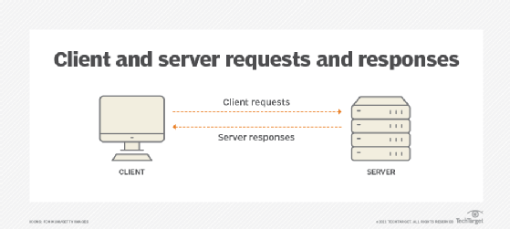

A Complete Guide to Core Internet & Web Concepts
A web server is a computer system — along with the software running on it — that stores, processes, and delivers web pages to users over the internet. When you visit a website, you are essentially asking that website's web server to send you its files. The server handles your request and sends back the relevant content.
The term "web server" can refer to either the physical hardware (the machine) or the software running on it (such as Apache or Nginx). In most discussions, both aspects work together as a unit.

Web servers continuously listen on port 80 (HTTP) or port 443 (HTTPS) for incoming requests. When a browser connects and asks for a specific page, the server locates the file, determines the appropriate response, and sends it back — typically within milliseconds.
For simple, static websites, the server just reads the HTML file from storage and sends it. For dynamic websites (like social media platforms or online shops), the server runs additional code on the back end to generate customised content for each user before sending a response.
Apache HTTP Server is one of the oldest and most widely used web server programs in the world. Nginx (pronounced "engine-x") is known for its high performance and is popular for serving large amounts of traffic efficiently. Microsoft IIS (Internet Information Services) is commonly used on Windows-based servers.
Cloud platforms like Amazon Web Services (AWS), Google Cloud, and Microsoft Azure now allow developers to run virtual web servers without managing physical hardware at all.